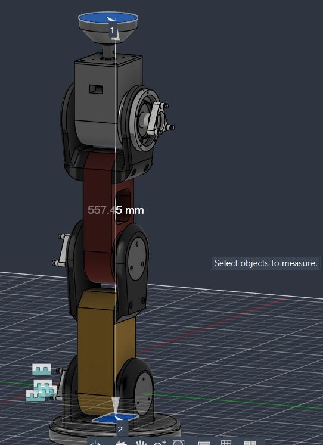
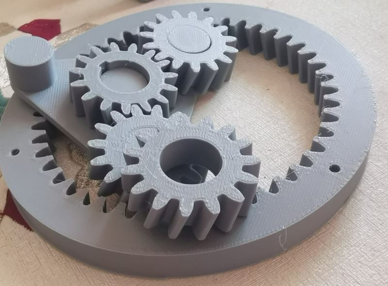
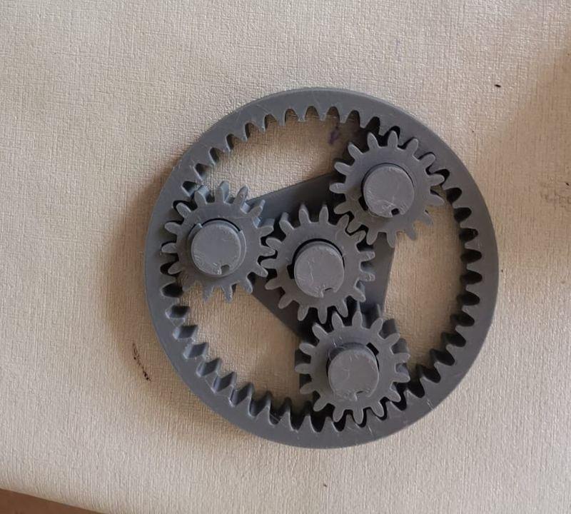
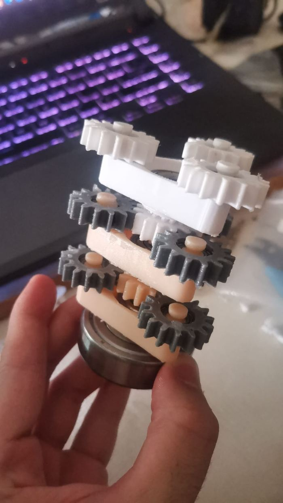
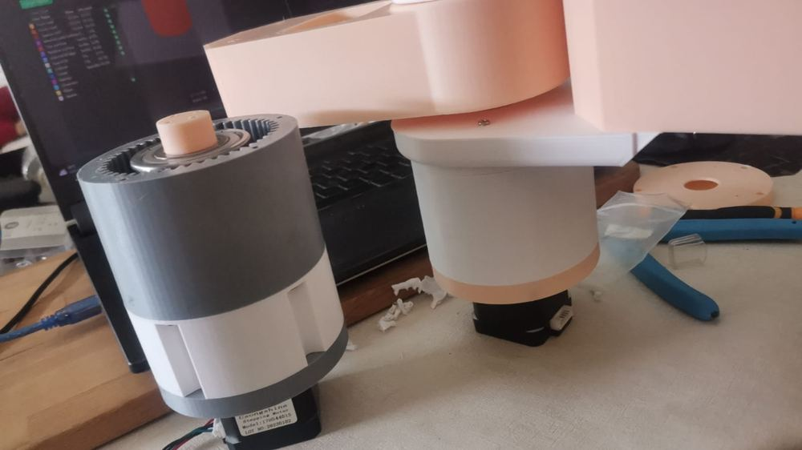
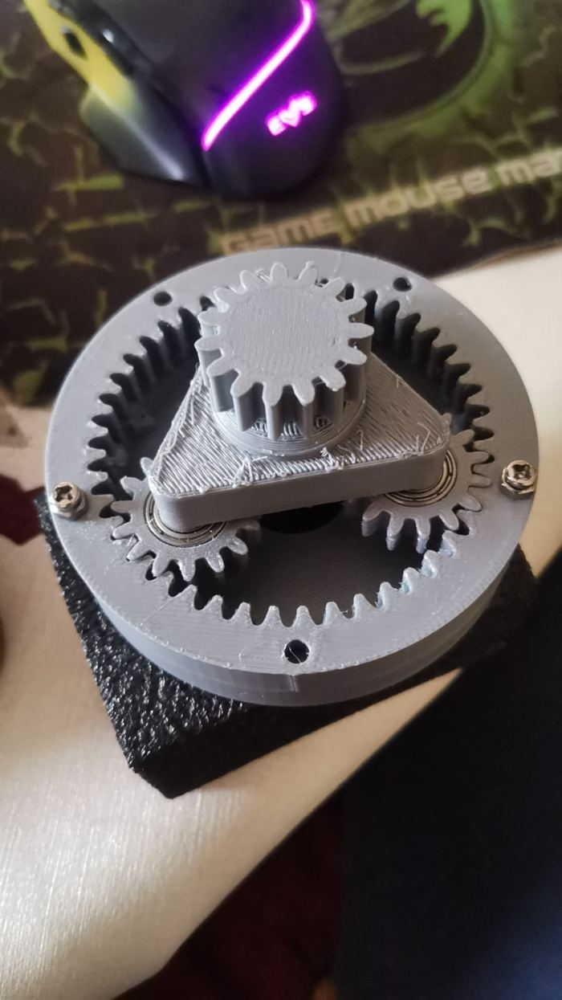
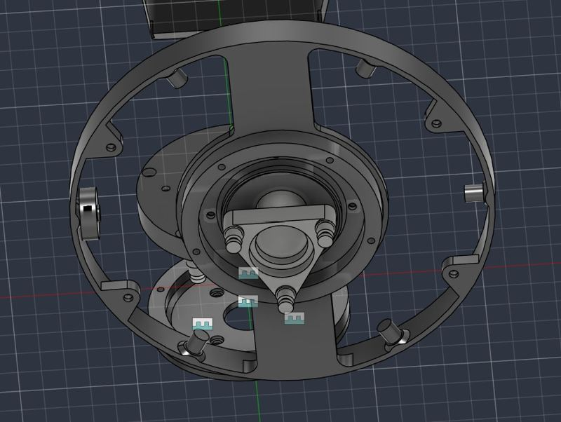
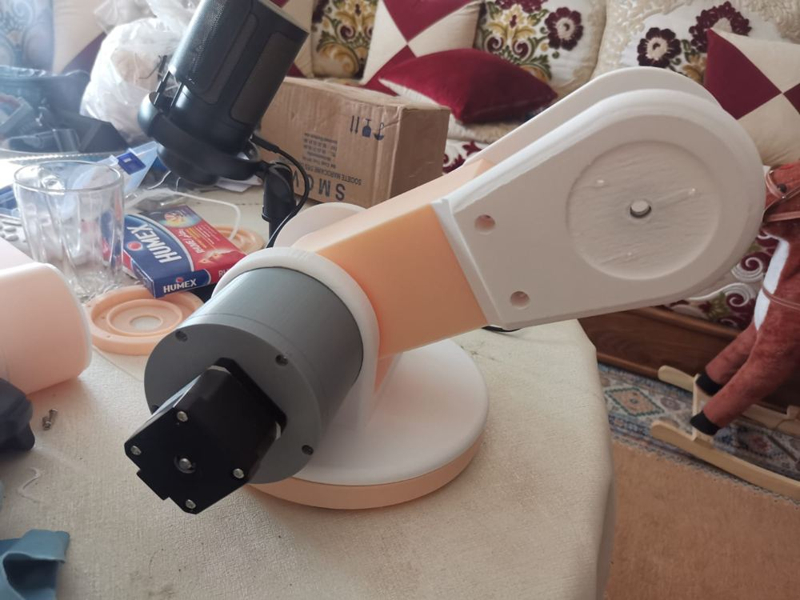
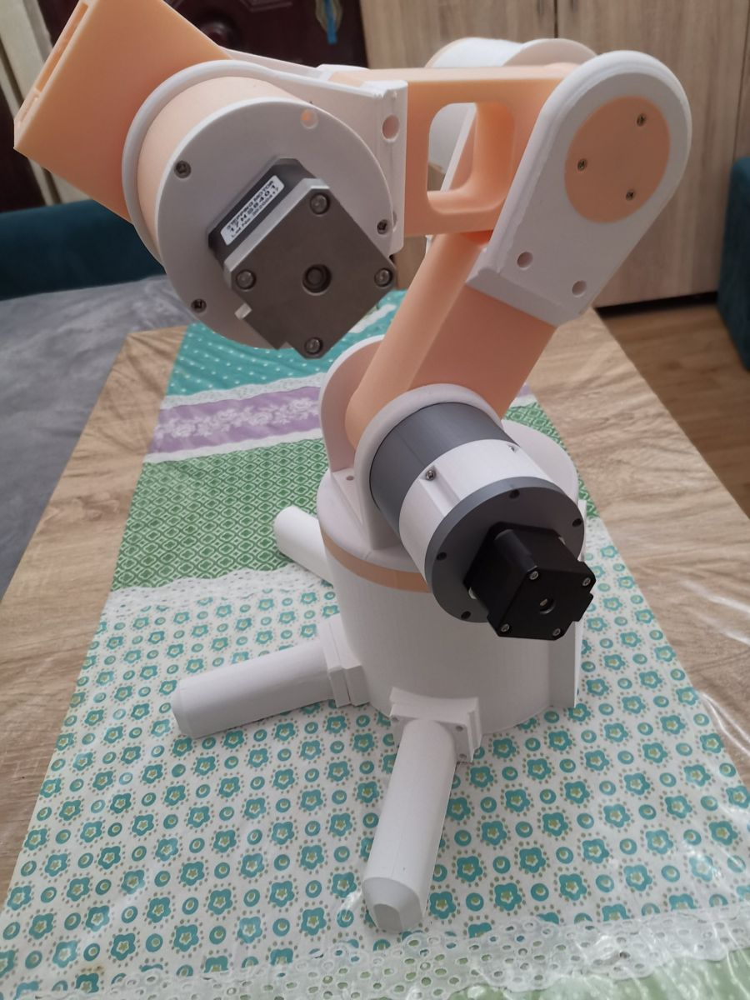
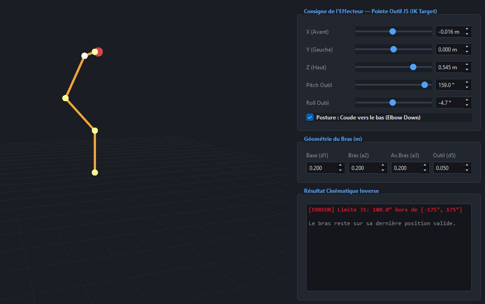

ENSAM Meknès · Génie Électromécanique, option Digitalisation
Un bras robotique 5 axes conçu sous Fusion 360, imprimé en 3D avec nos propres réducteurs planétaires, piloté par un firmware temps réel et une cinématique inverse analytique. Prochaine étape : son jumeau numérique sous ROS 2.

Démo interactive
Le modèle 3D est chargé directement depuis l'URDF exporté de Fusion 360, le même fichier que celui de notre jumeau numérique sous ROS 2. Il est piloté par notre solveur de cinématique inverse analytique. Déplacez les articulations une par une, ou donnez une position cible à l'outil et laissez le solveur calculer les angles. La trame affichée en bas est celle qui serait envoyée à l'Arduino.
Les limites articulaires sont celles mesurées sur le vrai bras (J2 ±85°, J3 ±90°, J4 ±90°). Un ordre hors limites est refusé et le bras reste sur sa dernière position valide, comme dans l'application réelle. L'anneau au sol montre où le bras peut saisir un objet avec l'outil vertical : entre environ 30 et 39 cm de l'axe de la base.
Couche 1 · Mécanique
Toutes les pièces structurelles et les réducteurs ont été dessinés sous Fusion 360 et imprimés en FDM. Chaque choix a été testé sur prototype avant d'être retenu.








Couche 2 · Électronique et actionneurs
| Articulation | Réduction | Pas / degré | Débattement |
|---|---|---|---|
| J1Base (lacet) | 1:16 | 142,2 | ±180° |
| J2Épaule | 1:64 | 568,9 | ±85° |
| J3Coude | 1:64 | 568,9 | ±90° |
| J4Poignet (tangage) | 1:16 | 142,2 | ±90° |
| J5Poignet (roulis) | 1:16 | 142,2 | ±180° |
90° commandés, 45° mesurés.
Les premiers essais tournaient exactement de moitié. En confrontant mesure et calcul, nous avons identifié un micropas réel de 1/16 au lieu de 1/8 : pas/degré = 200 × 16 × réduction / 360. Les sens de rotation de J3 et J4, inversés par le montage des moteurs, sont corrigés dans le logiciel.
Couche 3 · Firmware temps réel
L'Arduino ne calcule aucune géométrie. Il reçoit des consignes en pas et se consacre à une seule tâche : générer des impulsions régulières et coordonnées.
// PC → Arduino : consigne absolue en pas (J1…J5) <T,0,-33766,37973,7665,0> // pince sur la table // Arduino → PC ACK:MOVING ACK:IDLE // Pas/degré = 200 × 16 × réduction / 360 J1, J4, J5 : 142,222 // 1:16 J2, J3 : 568,889 // 1:64
Couche 4 · Cinématique
Le bras est modélisé avec la convention Denavit-Hartenberg standard, avec des longueurs extraites de la CAO. Validé contre l'URDF : écart inférieur à 1 mm sur 2 000 poses aléatoires. La cinématique inverse est résolue de façon analytique, sans itération, ce qui la rend assez rapide pour la téléopération en temps réel.
| i | α (°) | a (m) | d (m) | θ offset (°) |
|---|---|---|---|---|
| 1 | 90 | 0,0224 | 0,1846 | 0 |
| 2 | 0 | 0,1875 | 0 | 90 |
| 3 | 0 | 0,1935 | 0 | 0 |
| 4 | 90 | 0 | 0 | 90 |
| 5 | 0 | 0 | 0,146 | 0 |

Couche 5 · Jumeau numérique
Le modèle Fusion 360 est exporté en URDF puis intégré à ROS 2 Jazzy, avec Gazebo pour la simulation physique, MoveIt 2 pour la planification et ros2_control pour le lien avec le matériel. L'architecture cible reprend les niveaux de la pyramide de l'automatisation.
Un simple affichage 3D qui recopie les consignes reste un modèle numérique. Pour parler de jumeau, les données doivent circuler automatiquement dans les deux sens : les consignes vers le bras, et l'état réel du bras vers le modèle.
C'est pourquoi nous prévoyons des codeurs magnétiques absolus AS5600 en sortie de chaque réducteur. Ils mesurent l'angle réel des articulations, jeu des engrenages compris, et suppriment la prise d'origine manuelle au démarrage.
Le Raspberry Pi rend le bras autonome et en fait un nœud ROS 2 sur le réseau : une architecture de calcul en périphérie, avec une interface centrée sur l'opérateur, dans l'esprit de l'Industrie 5.0.
Chaque trajectoire est d'abord jouée dans Gazebo : limites articulaires et collisions avec la table ou le bras lui-même sont vérifiées avant d'atteindre le matériel.
Une séquence de pick & place se met au point dans la simulation, puis s'exécute sur le vrai bras. Le principe de la mise en service virtuelle.
Avec les codeurs, l'écart entre position commandée et position mesurée révèle les pertes de pas, les surcharges et l'usure des réducteurs.
Feuille de route
Limites actuelles, connues et assumées